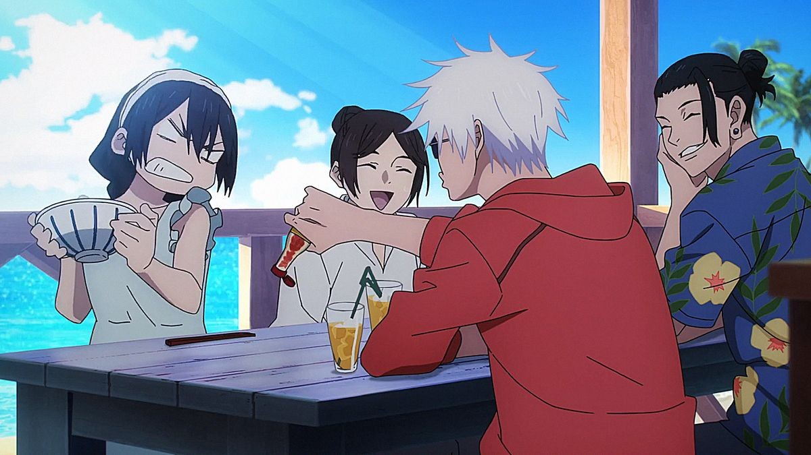
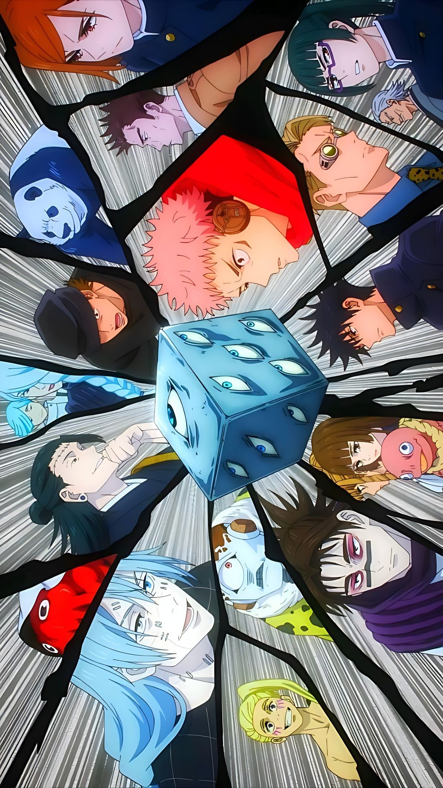

Episode 1 Jujutsu Kaisen Season 2 secara resmi dirilis pada tanggal 6 Juli 2023. Season ini melanjutkan season 1 yang dirilis pada Oktober 2020 lalu. Pada season 2 ini berjumlah 23 episode yang dibagi menjadi 2 part, yaitu 5 episode pertama berisi Hidden Inventory: Premature Death Arc yang dirilis pada tanggal 6 Juli 2023 - 3 Agustus 2023. Dan 18 episode setelahnya berisi Shibuya Incident Arc yang dirilis pada tanggal 31 Agustus - sekarang.

Lima episode pertama season 2 menceritakan masa lalu Gojo Satoru bersama sahabatnya Geto Suguru yang pada masa itu dijuluki
The Strongest Duo
Julukan ini diberikan karena Gojo merupakan pemilik Six Eyes dan Limitless dan Geto merupakan pengendali
roh terkutuk. Berlatar pada tahun 2006 dimana Gojo dan Geto duduk dibangku kelas 2 SMK Jujutsu. Pada suatu hari mereka
mendapatkan misi untuk mengawal dan melindungi seorang bocah perempuan bernama Riko Amanai dari target pembunuhan 2 kelompok
yaitu kelompok Q dan kelompok Agama Bintang. Riko merupakan wadah Star Plasma yang kelahirannya sangatlah langka yaitu
setiap 500 tahun sekali. Oleh karena itulah Riko harus melakukan penggabungan jiwa dengan Tengen, hal ini dilakukan untuk
mencegah terjadinya evolusi pada Tengen. Penggabungan jiwa ini juga termasuk dalam upaya memperkuat pertahanan para penyihir
setiap misi pembasmian roh terkutuk. Pada akhirnya penggabungan jiwa ini bertujuan untuk melindungi para nonpenyihir dan masyarakat
dari gangguan roh terkutuk.
Gojo dan Geto melakukan pengawalan terhadap Riko selama 3 hari.Pada hari ketiga inilah hari dilakukannya ritual penggabungan jiwa.
Gojo dan Geto mengantar Riko ke tempat ritual. Namun tak disangka seorang penyusup berhasil masuk dan menusuk Gojo dari belakang.
Disaat kejadian ini Geto diminta untuk langsung mengantar Riko masuk ke tempat ritual sementara Gojo melawan penyusup yang bernama
Toji. Tujuan Toji ialah membunuh Riko. Tetapi pertarungan Gojo dan Toji tidak berlangsung lama karena Gojo berhasil dikalahkan oleh
Toji. Toji memiliki senjata yang bisa mematahkan teknik Limitless milik Gojo, karena itulah Gojo diserang dan kalah. Toji pun masuk
kedalam tempat ritual dan bertarung dengan Geto, namun Geto juga dikalahkan oleh Toji. Pada akhirnya Toji berhasil membunuh Riko
dan membawa jasadnya kepada pemimpin kelompok Agama Bintang.
Setelah kejadian ini Geto mengalami trauma yang mendalam sehingga mentalnya menjadi kacau. Sangat banyak bisikan-bisikan jahat
yang mempengaruhi Geto sehingga dia menjadi seseorang yang berbeda. Akhirnya Geto menjadi buronan karena terbukti membunuh seluruh warga di suatu desa.

Kembali ke masa sekarang yaitu tahun 2018. Secara mendadak kota Shibuya muncul tabir yang mengurung masyarakat yang pada saat itu
sedang ada festival Halloween. Para penyihir segera mencari pelaku yang membuat tabir tersebut. Namun ternyata hal ini merupakan umpan
untuk menjebak Gojo Satoru. Gojo Satoru tersegel karena keterkejutan dia melihat dalang dari kejadian di Shibuya tersebut.Ialah Geto Suguru,
sahabatnya yang sebenarnya sudah dia bunuh 1 tahun yang lalu. Gojo tahu ada roh terkutuk yang saat ini mengendalikan tubuh Geto, namun ia tetap
tersegel. Yuuji dan kawan- kawan kemudian berbondong-bondong mencari cara melepaskan segel Gojo.
Toji merupakan seseorang langka yang sudah merasakan Pembatasan Surgawi
yaitu ia tidak memiliki energi terkutuk
maupun teknik terkutuk, namun sebagai gantinya kelima inderanya sangat tajam jauh melebihi orang pada umumnya. Ia merupakan
keturunan klan Zenin dan ayah dari Fushiguro Megumi.
Alasan Geto berubah menjadi jahat karena ia dikhianati oleh idealime yang dia anut yaitu penyihir ada untuk
melindungi nonpenyihir
namun kenyataannya para nonpenyihir yang sudah dilindungi oleh penyihir dari roh terkutuk
tidak tahu terima kasih dan justru meremehkan nyawa para penyihir yang sudah berkorban. Kemudian Geto bertekad untuk menciptakan
dunia yang hanya diisi oleh penyihir dengan membunuh semua nonpenyihir (masyarakat).
Fakta bahwa Gojo mampu membunuh seluruh masyarakat di penjuru Jepang seorang diri menjadi salah satu alasan terkuat mengapa Gojo disegel. Kekuatan Gojo sebagai penyihir terkuat dianggap menjadi penghalang tujuan Kenjaku.
Terkuak bahwa Choso merupakan kakak dari Itadori Yuuji. Fakta yang tidak sengaja terkuak setelah darah Choso dan darah Yuuji tercampur lalu menciptakan sebuah ingatan yang tidak pernah ada pada Choso. Dimana ingatan itu menunjukkan Yuuji adalah adiknya.
| Jujutsu Kaisen Chapter 237 | Baca disini |
| Jujutsu Kaisen Chapter 238 | Baca disini |
| Jujutsu Kaisen Chapter 239 | Baca disini |
| Jujutsu Kaisen Chapter 240 | Baca disini |
Manga diupdate setiap hari Minggu
| Jujutsu Kaisen S2 Episode 15 | 2 November 2023 |
| Jujutsu Kaisen S2 Episode 16 | 9 November 2023 |
| Jujutsu Kaisen S2 Episode 17 | 16 November 2023 |
| Jujutsu Kaisen S2 Episode 18 | 23 November 2023 |
| Jujutsu Kaisen S2 Episode 19 | 30 November 2023 |
| Jujutsu Kaisen S2 Episode 20 | 7 Desember 2023 |
| Jujutsu Kaisen S2 Episode 21 | 14 Desember 2023 |
| Jujutsu Kaisen S2 Episode 22 | 21 Desember 2023 |
| Jujutsu Kaisen S2 Episode 23 | 28 Desember 2023 |
Anime diupdate setiap hari Kamis malam